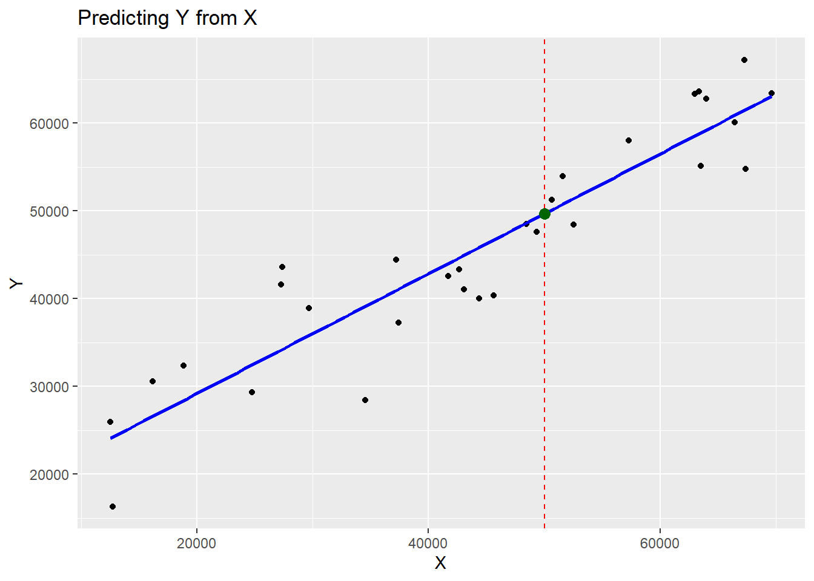
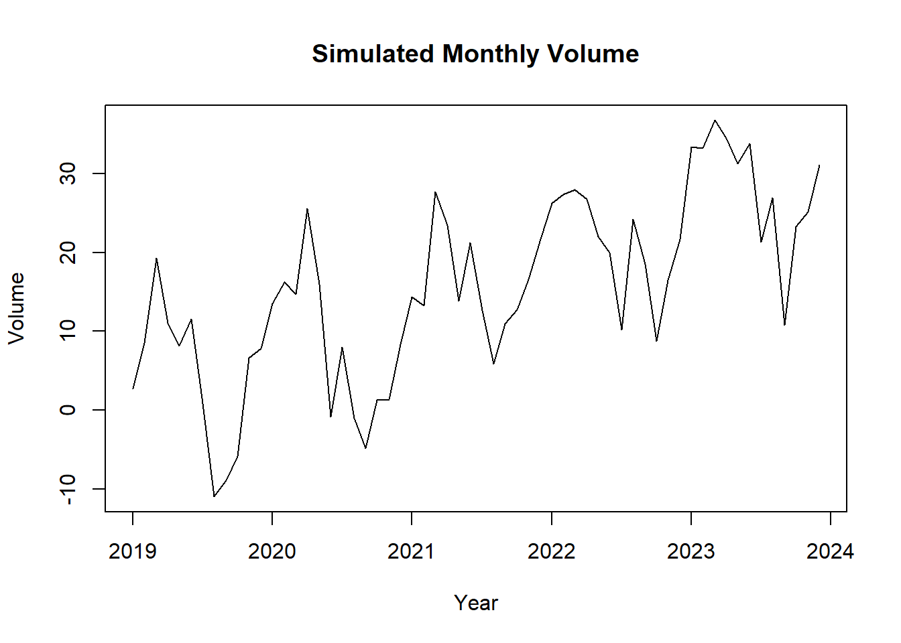
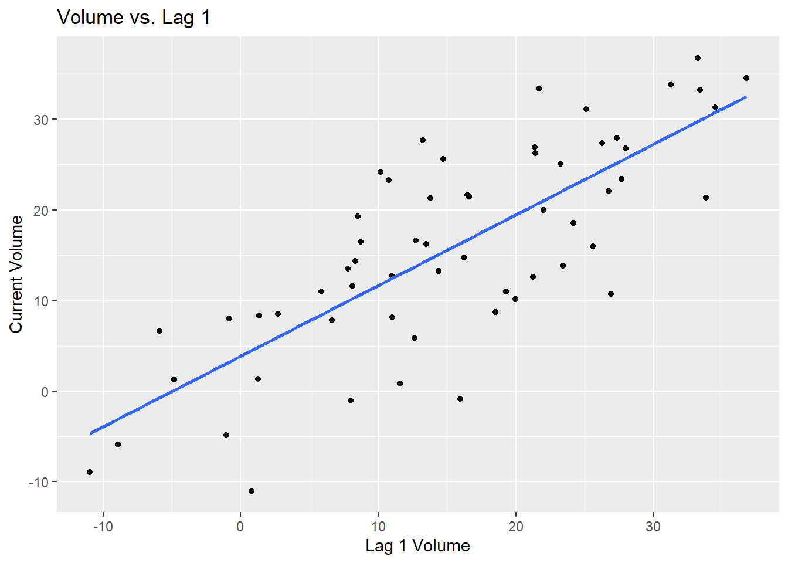
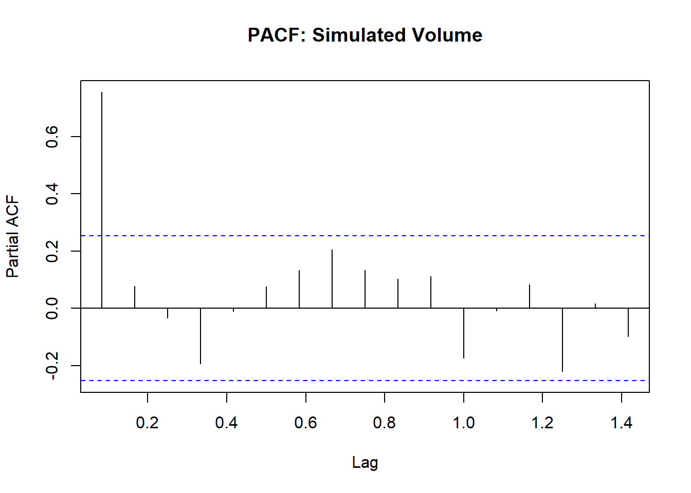
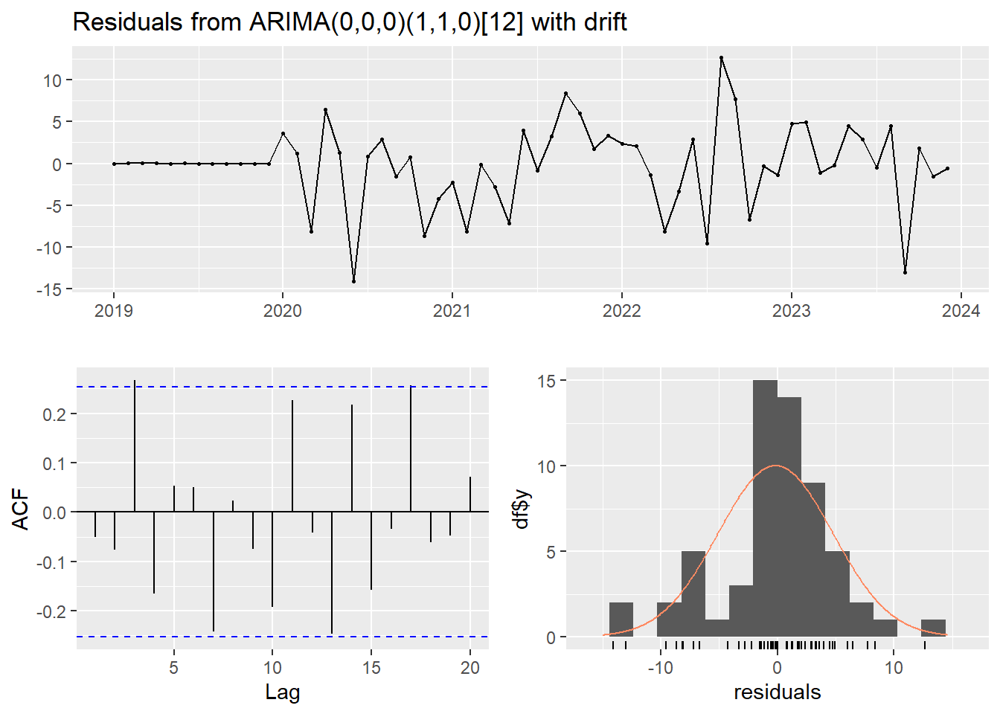
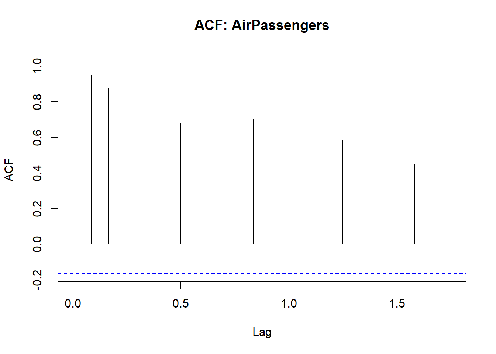
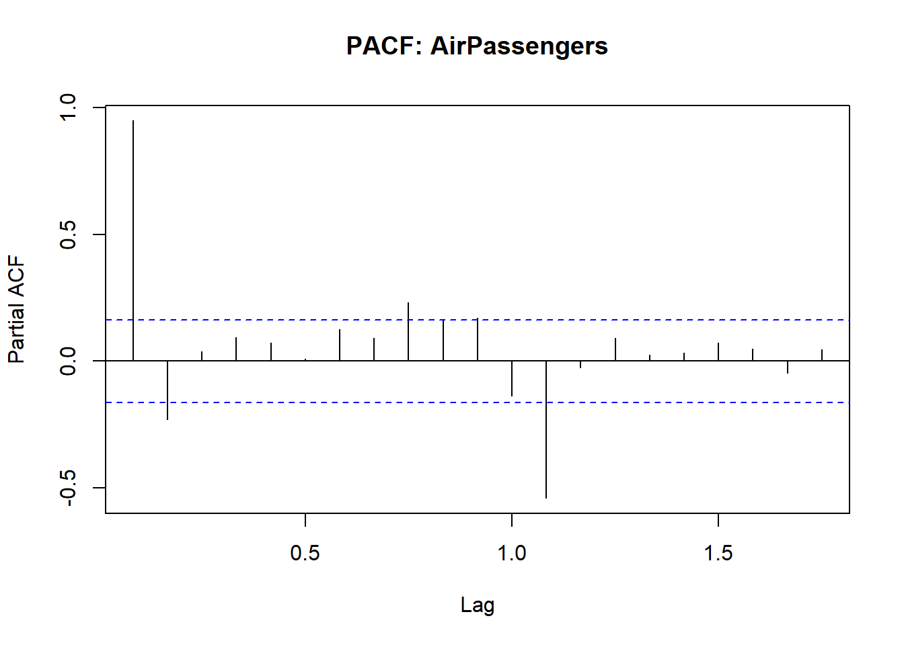
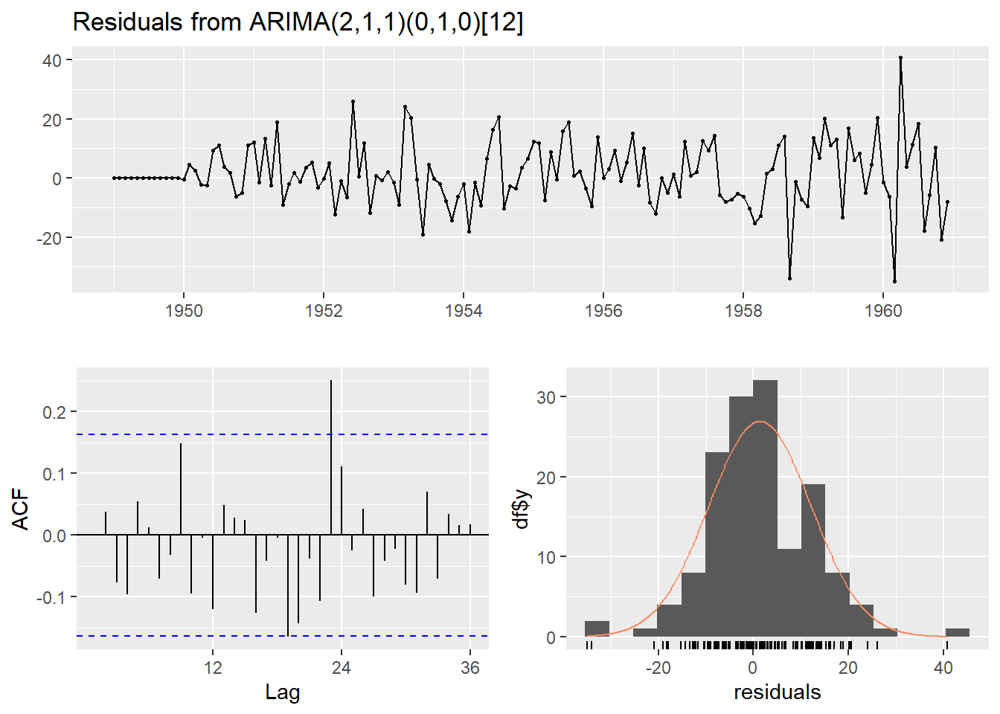

16 Additional Topics
This lecture introduces using OLS regression to predict outcome and key steps in working with primary survey data, panel data and time series forecasting using R.
16.1 Predicting Outcome using OLS
16.1.1 Simulated Data
set.seed(123)
x<-runif(30, min=10000, max=70000)
y<-12000+0.76*x+rnorm(30, mean=0, sd=5000)
sdf<-data.frame(Y=y, X=x)
head(sdf)## Y X
## 1 41648.10 27254.65
## 2 58035.97 57298.31
## 3 28416.26 34538.62
## 4 63372.37 62981.04
## 5 60121.35 66428.04
## 6 16338.26 12733.3916.1.2 OLS
##
## Call:
## lm(formula = Y ~ X, data = sdf)
##
## Residuals:
## Min 1Q Median 3Q Max
## -10714.7 -3601.4 97.7 3528.1 9406.1
##
## Coefficients:
## Estimate Std. Error t value Pr(>|t|)
## (Intercept) 1.556e+04 2.494e+03 6.237 9.69e-07 ***
## X 6.825e-01 5.245e-02 13.012 2.15e-13 ***
## ---
## Signif. codes: 0 '***' 0.001 '**' 0.01 '*' 0.05 '.' 0.1 ' ' 1
##
## Residual standard error: 4938 on 28 degrees of freedom
## Multiple R-squared: 0.8581, Adjusted R-squared: 0.853
## F-statistic: 169.3 on 1 and 28 DF, p-value: 2.153e-1316.1.3 Use predict()
Let us say we want to find out what Y is given a certain value of X, like say 50000
## 1
## 49683.44You need to create a new data frame for this.
16.1.4 Extra: Visualization
library(ggplot2)
ggplot(sdf, aes(x = X, y = Y)) +
geom_point() +
geom_smooth(method = "lm", se = FALSE, color = "blue") +
geom_vline(xintercept = 50000, linetype = "dashed", color = "red") +
geom_point(data = new, aes(x = 50000, y = predict(sim_ols, new)), color = "darkgreen", size = 3) +
labs(title = "Predicting Y from X",
x = "X", y = "Y")## `geom_smooth()` using formula = 'y ~ x'
16.1.5 Real Data
We will use the wooldridge package and use wage1
We will do a multiple regression model
##
## Call:
## lm(formula = wage ~ educ + exper + tenure, data = wage1)
##
## Residuals:
## Min 1Q Median 3Q Max
## -7.6068 -1.7747 -0.6279 1.1969 14.6536
##
## Coefficients:
## Estimate Std. Error t value Pr(>|t|)
## (Intercept) -2.87273 0.72896 -3.941 9.22e-05 ***
## educ 0.59897 0.05128 11.679 < 2e-16 ***
## exper 0.02234 0.01206 1.853 0.0645 .
## tenure 0.16927 0.02164 7.820 2.93e-14 ***
## ---
## Signif. codes: 0 '***' 0.001 '**' 0.01 '*' 0.05 '.' 0.1 ' ' 1
##
## Residual standard error: 3.084 on 522 degrees of freedom
## Multiple R-squared: 0.3064, Adjusted R-squared: 0.3024
## F-statistic: 76.87 on 3 and 522 DF, p-value: < 2.2e-16Say we want to see if someone had 16 years of education, 5 years of experience and 3 years of tenure, what will their wage be?
## 1
## 7.3302116.2 Designing and Testing a Survey
16.2.1 Calculating Sample Size
When conducting a survey, it’s important to determine how many responses you need. Sample size depends on the population size, margin of error, confidence level and type of estimate: proportion or mean.
Sample Size Formula for Proportions
\[ n = \frac{Z^2 \cdot p \cdot (1 - p)}{E^2} \]
Where:
Z=Z-score (1.96 for 95% confidence)
p= estimated population proportion (use 0.5 if unknown)
E=desired margin of error
Scenario 1: You want to study how noise pollution affects life satisfaction among DLSU students. The student population is approximately 20,000. You want ± 5% precision at 95% confidence.
Please install samplingbook package since this will help us calculate sample size.
##
## sample.size.prop object: Sample size for proportion estimate
## With finite population correction: N=20000, precision e=0.05 and expected proportion P=0.5
##
## Sample size needed: 377e is the ± 5% precision or the margin of error; it is the maximum acceptable difference between your sample estimate and the true population value.
Sample Size Formula for Means
\[ n = \left( \frac{Z \cdot S}{E} \right)^2 \] Where:
S=estimated population standard deviation
E=margin of error
Scenario 2: You want to estimate the average life satisfaction score (1-5 scale), with ±0.2 precision, assuming SD=1.1
##
## sample.size.mean object: Sample size for mean estimate
## With finite population correction: N=20000, precision e=0.2 and standard deviation S=1.1
##
## Sample size needed: 11616.2.2 Testing Survey Reliability - Cronbach’s Alpha
Cronbach’s alpha measures how consistent survey items (questions) work together to measure the same concept or construct.
When you ask multiple questions about a topic like noise pollution or life satisfaction, you want those questions to consistently reflect the same concept. Cronbach’s alpha helps you test the reliability of your questionnaire before analyzing the results.
Aim for ≥ 0.70 or higher to be considered acceptable in social science research.
Example Questionnaire (5-point Likert Scale):
- I am frequently disturbed by noise in my study areas.
- Noise pollution negatively affects my concentration.
- I feel more satisfied with life when my environment is quiet.
- I find it difficult to relax due to noise around campus.
- A quieter environment improves my overall well-being.
library(psych)
# Simulate responses from 100 students
set.seed(123)
survey_data <- data.frame(
Q1 = sample(1:5, 100, replace = TRUE),
Q2 = sample(1:5, 100, replace = TRUE),
Q3 = sample(1:5, 100, replace = TRUE),
Q4 = sample(1:5, 100, replace = TRUE),
Q5 = sample(1:5, 100, replace = TRUE)
)
# Calculate Cronbach's alpha
alpha(survey_data)## Warning in alpha(survey_data): Some items were negatively correlated with the first principal component and probably
## should be reversed.
## To do this, run the function again with the 'check.keys=TRUE' option## Some items ( Q1 Q2 ) were negatively correlated with the first principal component and
## probably should be reversed.
## To do this, run the function again with the 'check.keys=TRUE' option##
## Reliability analysis
## Call: alpha(x = survey_data)
##
## raw_alpha std.alpha G6(smc) average_r S/N ase mean sd median_r
## 0.034 0.026 0.05 0.0052 0.026 0.15 3 0.65 0.0018
##
## 95% confidence boundaries
## lower alpha upper
## Feldt -0.30 0.03 0.30
## Duhachek -0.26 0.03 0.33
##
## Reliability if an item is dropped:
## raw_alpha std.alpha G6(smc) average_r S/N alpha se var.r med.r
## Q1 0.072 0.072 0.080 0.0191 0.078 0.15 0.0097 0.0071
## Q2 0.034 0.029 0.047 0.0074 0.030 0.16 0.0102 0.0013
## Q3 -0.114 -0.127 -0.075 -0.0291 -0.113 0.18 0.0074 -0.0024
## Q4 0.083 0.081 0.065 0.0215 0.088 0.15 0.0015 0.0035
## Q5 0.039 0.028 0.058 0.0071 0.029 0.16 0.0153 0.0189
##
## Item statistics
## n raw.r std.r r.cor r.drop mean sd
## Q1 100 0.41 0.41 -0.077 -0.0219 2.9 1.4
## Q2 100 0.48 0.45 0.066 0.0096 3.0 1.5
## Q3 100 0.55 0.54 0.521 0.1130 3.0 1.5
## Q4 100 0.37 0.41 -0.022 -0.0357 3.0 1.3
## Q5 100 0.44 0.45 0.019 0.0046 2.9 1.4
##
## Non missing response frequency for each item
## 1 2 3 4 5 miss
## Q1 0.21 0.20 0.23 0.17 0.19 0
## Q2 0.25 0.20 0.14 0.17 0.24 0
## Q3 0.21 0.24 0.16 0.14 0.25 0
## Q4 0.17 0.20 0.23 0.26 0.14 0
## Q5 0.22 0.19 0.22 0.19 0.18 0Warning: Reverse-coded Items “Some items were negatively correlated with the first principal component…” –> This means Q1 and Q2 may be phrased in the opposite direction of the rest.
If students agree with Q3–Q5 but disagree with Q1–Q2, it will weaken reliability.
Fix: Recode these items or rerun with check.keys = TRUE to automatically detect and reverse them.
## Warning in alpha(survey_data, check.keys = TRUE): Some items were negatively correlated with the first principal component and were automatically reversed.
## This is indicated by a negative sign for the variable name.##
## Reliability analysis
## Call: alpha(x = survey_data, check.keys = TRUE)
##
## raw_alpha std.alpha G6(smc) average_r S/N ase mean sd median_r
## 0.2 0.21 0.2 0.051 0.27 0.13 3 0.7 0.0095
##
## 95% confidence boundaries
## lower alpha upper
## Feldt -0.07 0.2 0.43
## Duhachek -0.04 0.2 0.45
##
## Reliability if an item is dropped:
## raw_alpha std.alpha G6(smc) average_r S/N alpha se var.r med.r
## Q1- 0.151 0.161 0.145 0.046 0.191 0.14 0.0076 0.0071
## Q2- 0.191 0.196 0.169 0.057 0.244 0.13 0.0063 0.0095
## Q3 0.201 0.203 0.169 0.060 0.255 0.13 0.0041 0.0463
## Q4 0.039 0.041 0.036 0.010 0.042 0.16 0.0019 0.0058
## Q5 0.250 0.263 0.228 0.082 0.357 0.12 0.0073 0.1064
##
## Item statistics
## n raw.r std.r r.cor r.drop mean sd
## Q1- 100 0.50 0.50 0.241 0.1086 3.1 1.4
## Q2- 100 0.50 0.48 0.178 0.0718 3.0 1.5
## Q3 100 0.48 0.47 0.174 0.0615 3.0 1.5
## Q4 100 0.56 0.59 0.474 0.2231 3.0 1.3
## Q5 100 0.41 0.42 0.018 0.0085 2.9 1.4
##
## Non missing response frequency for each item
## 1 2 3 4 5 miss
## Q1 0.21 0.20 0.23 0.17 0.19 0
## Q2 0.25 0.20 0.14 0.17 0.24 0
## Q3 0.21 0.24 0.16 0.14 0.25 0
## Q4 0.17 0.20 0.23 0.26 0.14 0
## Q5 0.22 0.19 0.22 0.19 0.18 0Output Table 1: General Reliability Info
| Column | Meaning |
|---|---|
raw_alpha |
Actual Cronbach’s alpha (approx. 0.03 –> very low reliability) |
std.alpha |
Standardized alpha (if items are on different scales – not needed here) |
G6(smc) |
Guttman’s lambda 6 (alternative to alpha) |
average_r |
Average correlation between all pairs of items |
S/N |
Signal-to-noise ratio (higher is better) |
ase |
Approx. standard error of alpha |
Interpretation: Raw alpha = 0.03 means very poor reliability (items don’t measure the same concept).
This is likely due to uncorrelated or negatively correlated items as the warning mentioned.
Output Table 2: Confidence Intervals
| Method | Lower | Alpha | Upper |
|---|---|---|---|
| Feldt | -0.30 | 0.03 | 0.30 |
| Duhachek | -0.26 | 0.03 | 0.33 |
It further strengthens the unreliability of the questions.
Output Table 3: Alpha if Item Dropped
| Item | raw_alpha | average_r | Notes |
|---|---|---|---|
| Q3 | -0.11 | -0..03 | Hurts reliability the most |
| Q4 | 0.08 | 0.02 | Slight improvement |
| Q1,Q2,Q5 | ~0.03-0.07 | ~0.01-0.02 | Not helping much |
Use this to identify items that may be off-topic.
Output Table4: Correlations and Item Stats
| Column | Meaning |
|---|---|
r.cor |
Correlation of each item with total score (ideal: >0.3) |
r.drop |
Correlation of each item excluding itself from the total |
mean |
Mean response |
sd |
Standard deviation |
r.cor and r.drop should be positive and >0.3
Now, let us use a Likert dataset called bfi from the package psych.
library(psych)
data(bfi)
# Select 5 items
agree_items <- bfi[, c("A1", "A2", "A3", "A4", "A5")]
agree_items <- na.omit(agree_items)
alpha_result <- alpha(agree_items)## Warning in alpha(agree_items): Some items were negatively correlated with the first principal component and probably
## should be reversed.
## To do this, run the function again with the 'check.keys=TRUE' option## Some items ( A1 ) were negatively correlated with the first principal component and
## probably should be reversed.
## To do this, run the function again with the 'check.keys=TRUE' option##
## Reliability analysis
## Call: alpha(x = agree_items)
##
## raw_alpha std.alpha G6(smc) average_r S/N ase mean sd median_r
## 0.43 0.46 0.53 0.14 0.84 0.017 4.2 0.74 0.32
##
## 95% confidence boundaries
## lower alpha upper
## Feldt 0.4 0.43 0.46
## Duhachek 0.4 0.43 0.46
##
## Reliability if an item is dropped:
## raw_alpha std.alpha G6(smc) average_r S/N alpha se var.r med.r
## A1 0.72 0.73 0.67 0.397 2.64 0.0089 0.0066 0.375
## A2 0.28 0.30 0.39 0.096 0.42 0.0223 0.1106 0.079
## A3 0.17 0.20 0.31 0.060 0.25 0.0253 0.1015 0.079
## A4 0.25 0.30 0.44 0.098 0.43 0.0233 0.1614 0.103
## A5 0.21 0.23 0.36 0.071 0.31 0.0242 0.1322 0.093
##
## Item statistics
## n raw.r std.r r.cor r.drop mean sd
## A1 2709 0.055 0.021 -0.40 -0.31 2.4 1.4
## A2 2709 0.631 0.665 0.58 0.37 4.8 1.2
## A3 2709 0.728 0.743 0.72 0.48 4.6 1.3
## A4 2709 0.689 0.661 0.50 0.37 4.7 1.5
## A5 2709 0.701 0.718 0.64 0.45 4.6 1.3
##
## Non missing response frequency for each item
## 1 2 3 4 5 6 miss
## A1 0.33 0.30 0.14 0.12 0.08 0.03 0
## A2 0.02 0.05 0.05 0.20 0.37 0.31 0
## A3 0.03 0.06 0.08 0.20 0.36 0.27 0
## A4 0.05 0.08 0.07 0.16 0.24 0.41 0
## A5 0.02 0.07 0.09 0.22 0.35 0.25 016.3 Panel Data Models (Fixed vs. Random Effects)
We’ll use the plm package to analyze panel data — where the same individuals (or units) are observed across multiple time periods.
16.3.1 Simulated Panel Dataset
Example: Suppose we surveyed 5 students in 3 consecutive years (2020-2022), we want to analyze how a variable x affects a variable y
library(plm)
set.seed(123)
panel_sim <- data.frame(
id = rep(1:5, each = 3), #student
year = rep(2020:2022, times = 5), #year
x = rnorm(15, mean = 10),
y = rnorm(15, mean = 50)
)
# Convert to panel format
pdata_sim <- pdata.frame(panel_sim, index = c("id", "year")) #needed so that plm can understand the data structure, like, which is individual and time16.3.2 Fixed Effects vs. Random Effects
Fixed Effects: This means the model only uses variation within each individual over time to estimate the effect of x on y.
In the code, it contains "within" which removes all time-invariant characteristics of each individual like gender.
When you are interested in how changes within individuals (over time) affect the outcome.
Random Effects: This assumes that individual-specific effects are random and uncorrelated with predictors. It allows estimation of time-invariant variables like gender or region.
When you are interested in comparing differences across individuals and want to include time-invariant traits like gender or location.
## Oneway (individual) effect Within Model
##
## Call:
## plm(formula = y ~ x, data = pdata_sim, model = "within")
##
## Balanced Panel: n = 5, T = 3, N = 15
##
## Residuals:
## Min. 1st Qu. Median 3rd Qu. Max.
## -1.122145 -0.725146 -0.017663 0.605705 1.312598
##
## Coefficients:
## Estimate Std. Error t-value Pr(>|t|)
## x -0.84218 0.37470 -2.2476 0.0512 .
## ---
## Signif. codes: 0 '***' 0.001 '**' 0.01 '*' 0.05 '.' 0.1 ' ' 1
##
## Total Sum of Squares: 15.31
## Residual Sum of Squares: 9.8057
## R-Squared: 0.35952
## Adj. R-Squared: 0.003691
## F-statistic: 5.05187 on 1 and 9 DF, p-value: 0.051201Interpretation: How does a change in x over time affect y for the specific individual?
## Oneway (individual) effect Random Effect Model
## (Swamy-Arora's transformation)
##
## Call:
## plm(formula = y ~ x, data = pdata_sim, model = "random")
##
## Balanced Panel: n = 5, T = 3, N = 15
##
## Effects:
## var std.dev share
## idiosyncratic 1.090 1.044 1
## individual 0.000 0.000 0
## theta: 0
##
## Residuals:
## Min. 1st Qu. Median 3rd Qu. Max.
## -1.63076 -0.83589 0.11735 0.72396 1.60535
##
## Coefficients:
## Estimate Std. Error z-value Pr(>|z|)
## (Intercept) 55.85115 3.23285 17.2761 < 2e-16 ***
## x -0.60062 0.31741 -1.8923 0.05845 .
## ---
## Signif. codes: 0 '***' 0.001 '**' 0.01 '*' 0.05 '.' 0.1 ' ' 1
##
## Total Sum of Squares: 16.712
## Residual Sum of Squares: 13.103
## R-Squared: 0.21596
## Adj. R-Squared: 0.15564
## Chisq: 3.5807 on 1 DF, p-value: 0.058455Some notes on the results:
A balanced model simply means that each individual has the same number of time observations
FE and RE: When the residuals are centered around 0, it is a good thing.
FE: A 1-unit increase in x is associated with a decrease of 0.84 in y for the same individual over time, with slight statistical significance
FE: When it comes to the R-squared, 36% of the within-individual variation in y is explained by x.
RE: The variance has the idiosyncratic, individual and theta. The effects suggests whether the random effects component (individual differences) add any explanatory power and since it’s 0, it doesn’t.
RE: A 1-unit increase in x is associated with a 0.60 increase in y, with slight statistical significance.
RE: When it comes to the R-squared, 21.6% of variation in y is explained by x.
Note: The individual effect variance is 0, and theta = 0, this is already a clue that Random Effects model adds nothing. We need to check
16.3.3 Hausman Test
If the p-value is greater than 0.05, we use the Random Effects but if p-value is less than 0.05, we use Fixed Effects.
##
## Hausman Test
##
## data: y ~ x
## chisq = 1.4717, df = 1, p-value = 0.2251
## alternative hypothesis: one model is inconsistentThe Hausman Test says that Random Effects is acceptable, though we saw that the variance (individual=0, theta=0), so what do we do? We can use pooled OLS.
Let’s try a more realistic example with the dataset Grunfeld from the plm package
## firm year inv value capital
## 1 1 1935 317.6 3078.5 2.8
## 2 1 1936 391.8 4661.7 52.6
## 3 1 1937 410.6 5387.1 156.9
## 4 1 1938 257.7 2792.2 209.2
## 5 1 1939 330.8 4313.2 203.4
## 6 1 1940 461.2 4643.9 207.2We have 10 US firms over 20 years (1935-1954) with variables like inv (investment), value, and capital.
panel<-pdata.frame(Grunfeld, index = c("firm", "year")) #we need to identify the 'individual' and 'time'## Oneway (individual) effect Within Model
##
## Call:
## plm(formula = inv ~ value + capital, data = panel, model = "within")
##
## Balanced Panel: n = 10, T = 20, N = 200
##
## Residuals:
## Min. 1st Qu. Median 3rd Qu. Max.
## -184.00857 -17.64316 0.56337 19.19222 250.70974
##
## Coefficients:
## Estimate Std. Error t-value Pr(>|t|)
## value 0.110124 0.011857 9.2879 < 2.2e-16 ***
## capital 0.310065 0.017355 17.8666 < 2.2e-16 ***
## ---
## Signif. codes: 0 '***' 0.001 '**' 0.01 '*' 0.05 '.' 0.1 ' ' 1
##
## Total Sum of Squares: 2244400
## Residual Sum of Squares: 523480
## R-Squared: 0.76676
## Adj. R-Squared: 0.75311
## F-statistic: 309.014 on 2 and 188 DF, p-value: < 2.22e-16Let’s discuss the results together.
## Oneway (individual) effect Random Effect Model
## (Swamy-Arora's transformation)
##
## Call:
## plm(formula = inv ~ value + capital, data = panel, model = "random")
##
## Balanced Panel: n = 10, T = 20, N = 200
##
## Effects:
## var std.dev share
## idiosyncratic 2784.46 52.77 0.282
## individual 7089.80 84.20 0.718
## theta: 0.8612
##
## Residuals:
## Min. 1st Qu. Median 3rd Qu. Max.
## -177.6063 -19.7350 4.6851 19.5105 252.8743
##
## Coefficients:
## Estimate Std. Error z-value Pr(>|z|)
## (Intercept) -57.834415 28.898935 -2.0013 0.04536 *
## value 0.109781 0.010493 10.4627 < 2e-16 ***
## capital 0.308113 0.017180 17.9339 < 2e-16 ***
## ---
## Signif. codes: 0 '***' 0.001 '**' 0.01 '*' 0.05 '.' 0.1 ' ' 1
##
## Total Sum of Squares: 2381400
## Residual Sum of Squares: 548900
## R-Squared: 0.7695
## Adj. R-Squared: 0.76716
## Chisq: 657.674 on 2 DF, p-value: < 2.22e-16Let’s discuss the results together.
##
## Hausman Test
##
## data: inv ~ value + capital
## chisq = 2.3304, df = 2, p-value = 0.3119
## alternative hypothesis: one model is inconsistentLet’s discuss the results together.
16.4 Lagged Values and Preliminaries in Forecasting
Lagged values are simply past values of a time series. So, if we have Lag 1, it means previous time period then so on and so forth. Lagged values help capture temporal dependence which is important in time series forecasting. For this section, install and load the forecast package and load the tidyverse package and the zoo package.
16.4.1 Simulated Time Series
We will create a simulated monthly volume data with some trend and noise.
set.seed(123)
n<-60
#Simulate a trend + seasonal + random noise time series
time<-1:n
trend <- 0.5 * time #creates a linear trend that means as time increases, the sales value increases at a steady rate
seasonality <- 10 * sin(2 * pi * time / 12) #this adds ups and downs each year to model seasonality.
noise <- rnorm(n, mean = 0, sd = 5) #adds random fluctuations so it closely resembles reality
volume <- trend + seasonality + noise #this makes the sales data
sim_ts <- ts(volume, start = c(2019, 1), frequency = 12) #this creates the time series starting with 2019 and that it is monthly data
plot(sim_ts, main = "Simulated Monthly Volume", ylab = "Volume", xlab = "Year")
Now, the next step is to create lagged values to understand past-dependence.
library(zoo)
library(dplyr)
library(ggplot2)
volume <- as.numeric(sim_ts)
time_vec <- as.yearmon(time(sim_ts))
datats <- data.frame(
Time = time_vec,
Volume = volume
) |>
mutate(
Lag1 = dplyr::lag(Volume, 1),
Lag2 = dplyr::lag(Volume, 2)
)
head(datats, 5)## Time Volume Lag1 Lag2
## 1 Jan 2019 2.697622 NA NA
## 2 Feb 2019 8.509367 2.697622 NA
## 3 Mar 2019 19.293542 8.509367 2.697622
## 4 Apr 2019 11.012796 19.293542 8.509367
## 5 May 2019 8.146439 11.012796 19.293542Volume was converted to numeric to keep the values, then we need to keep the time as a time variable. We now have the lag.
16.4.1.1 Scatterplot
ggplot(datats, aes(x = Lag1, y = Volume)) +
geom_point() +
geom_smooth(method = "lm", se = FALSE) +
labs(title = "Volume vs. Lag 1", x = "Lag 1 Volume", y = "Current Volume")## `geom_smooth()` using formula = 'y ~ x'## Warning: Removed 1 row containing non-finite outside the scale range (`stat_smooth()`).## Warning: Removed 1 row containing missing values or values outside the scale range
## (`geom_point()`).
There should be a pattern to see whether the data is good for forecasting. The scatterplot does show a pattern but, if you want to be sure, we can use the auto.arima() in the forecast package (which will be done later).
Let’s see if the data has seasonality, it is necessary to difference and what the AR order (p) that will be used.
16.4.1.2 ACF and PACF


In the ACF: If bars cross the blue lines, it means the autocorrelation at that lag is statistically significant (meaning, these past values influence the present). We also do not see a sudden cutoff because if we do, we will have the MA process (we use the AR or ARIMA).
In the PACF: We look at bars outside the blue lines so we see it at Lag 1 which means that there is strong direct relationship between current value and the previous value. When all other lags are within the blue lines, it is typical of the AR(1) process.
16.4.1.3 Stationarity (ADF test)
We need to install and load the tseries package for the Augmented-Dickey Fuller test to check if our data is stationary. If p-value is greater than 0.05, we need differencing.
## Warning in adf.test(sim_ts): p-value smaller than printed p-value##
## Augmented Dickey-Fuller Test
##
## data: sim_ts
## Dickey-Fuller = -5.9266, Lag order = 3, p-value = 0.01
## alternative hypothesis: stationary16.4.1.4 auto.arima
## Series: sim_ts
## ARIMA(0,0,0)(1,1,0)[12] with drift
##
## Coefficients:
## sar1 drift
## -0.6482 0.5105
## s.e. 0.1053 0.0445
##
## sigma^2 = 31.18: log likelihood = -152.91
## AIC=311.82 AICc=312.37 BIC=317.43
##
## Training set error measures:
## ME RMSE MAE MPE MAPE MASE ACF1
## Training set -0.1763034 4.889015 3.344342 12.61809 63.78359 0.4208828 -0.05025177
##
## Ljung-Box test
##
## data: Residuals from ARIMA(0,0,0)(1,1,0)[12] with drift
## Q* = 18.699, df = 11, p-value = 0.06671
##
## Model df: 1. Total lags used: 12The code automatically selects the best ARIMA(p,d,q) model. It checks for stationarity, determines how many differences are needed (d), tests different combinations of autoregressive (p) and moving average (q) terms.
Some statements to help you understand what the p,d,q are:
p: If volume was high last month, they might still be high this month
d: Did the volume change, like, what was the movement? An increase or decrease?
q: Lol, the volume was not what I expected. Let’s correct that this time around!
So together, the ARIMA model (let’s say ARIMA (1,1,1) is:
“I will predict today’s volume based on last month’s volume and the mistake I made in last month’s prediction but I will do that after adjusting the data for trend.”
Now, when it comes to the results, the best model is ARIMA(0,0,0)(1,1,0)[12] with drift. This means that the model doesn’t rely on lagged values (0,0,0) and the model relies on the previous year’s value (AR term at lag 12). The model captures a linear trend over time too.
As for the plots, I will only summarize what you need to see:
Top: Shows the residuals which should fluctuate randomly around zero. There shouldn’t be a pattern.
Left: ACF of Residuals where what you want is that all bars are within the blue dashed lines (95% confidence interval)
Right: Histogram of Residuals where it shows the distribution of errors and you want the red curve (normal fit) to overlap on the histogram nicely.
16.4.2 Real Data
We use a dataset from Base R - monthly airline passengers from 1949-1960.

datats2 <- data.frame(
time = as.yearmon(time(AirPassengers)),
passengers = as.numeric(AirPassengers)
)
datats2 <- datats2 |>
mutate(
lag1 = dplyr::lag(passengers, 1),
lag12 = dplyr::lag(passengers, 12)
)
head(datats2, 15)## time passengers lag1 lag12
## 1 Jan 1949 112 NA NA
## 2 Feb 1949 118 112 NA
## 3 Mar 1949 132 118 NA
## 4 Apr 1949 129 132 NA
## 5 May 1949 121 129 NA
## 6 Jun 1949 135 121 NA
## 7 Jul 1949 148 135 NA
## 8 Aug 1949 148 148 NA
## 9 Sept 1949 136 148 NA
## 10 Oct 1949 119 136 NA
## 11 Nov 1949 104 119 NA
## 12 Dec 1949 118 104 NA
## 13 Jan 1950 115 118 112
## 14 Feb 1950 126 115 118
## 15 Mar 1950 141 126 132We don’t have data for lag12’s first 12 rows.
16.4.2.1 ACF and PACF


We use the dataset, not the one where we made the tibble. so, we see that there is high autocorrelation at many lags and no sudden cutoff. We also see a spike at lag 1 in the PACF.
16.4.2.2 Stationarity
## Warning in adf.test(AirPassengers): p-value smaller than printed p-value##
## Augmented Dickey-Fuller Test
##
## data: AirPassengers
## Dickey-Fuller = -7.3186, Lag order = 5, p-value = 0.01
## alternative hypothesis: stationaryThough the ACF/PACF suggest that it’s non-stationary, the ADF might return stationarity due to seasonal effects. So, let us confirm what needs to be done through the auto.arima.
16.4.2.3 auto.arima
## Series: AirPassengers
## ARIMA(2,1,1)(0,1,0)[12]
##
## Coefficients:
## ar1 ar2 ma1
## 0.5960 0.2143 -0.9819
## s.e. 0.0888 0.0880 0.0292
##
## sigma^2 = 132.3: log likelihood = -504.92
## AIC=1017.85 AICc=1018.17 BIC=1029.35
##
## Training set error measures:
## ME RMSE MAE MPE MAPE MASE ACF1
## Training set 1.3423 10.84619 7.86754 0.420698 2.800458 0.245628 -0.00124847
##
## Ljung-Box test
##
## data: Residuals from ARIMA(2,1,1)(0,1,0)[12]
## Q* = 37.784, df = 21, p-value = 0.01366
##
## Model df: 3. Total lags used: 24We see that seasonal differencing is employed since the best model is ARIMA(2,1,1)(0,1,0)[12]. The trend and seasonality were present (2,1,1)(0,1,0) and were addressed through differencing.
The results show that not all bars are within the blue lines so we need to check or adjust lag terms (especially the lag that is not within the bounds).